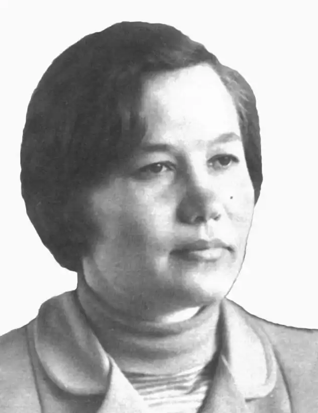

Тамара Коломієць народилася 9 квітня 1935 року в місті Корсунь.
1957 року закінчила Київський університет.
Мати багато працювала, тому вихованням дівчинки займалася бабуся. Тамара виросла "у пелені бабусі Ганни", яка була в міру релігійною, керувалася здоровим глуздом і прислухалася до народної мудрості. Ці риси характеру вона передала внучці. Неписьменна баба Ганна знала напам'ять майже весь "Кобзар" і часто його цитувала. Мама дівчинки працювала лікарем, але Тамарі ця професія була не зовсім зрозуміла: лікарня, амбулаторія, виклик, знову лікарня. Дідуся і татка, на жаль, уже в ранньому дитинстві у дівчинки не було: дідуся забрала громадянська, а татка — Друга світова війна. Але був ще маленький братик, якому доводилося власноручно майструвати вітрячки, літачки та кораблики. Тамара Коломієць належить до покоління, дитинство якого було перерване війною. Ще до війни дівчинка вміла читати. А потім усі підручники замінив "Кобзар" та бабусині козацькі й чумацькі сумовиті пісні, казки, загадки, лічилки, яких вона знала безліч. У дитинстві дівчинка надавала перевагу хлопчачій компанії і гралася виключно з хлопчаками. У шкільні роки мріяла стати лікарем, бо дитяче серце ще довго залишалося чутливим до ран війни. Якщо у школі задавали писати твір на вільну тему, то Тамарі легше було висловлюватись у віршованій формі. А коли в пам'яті народжувався якийсь рядок, то він, як правило, мав бути останнім і на нього "треба було вийти". Тамара Коломієць має двох дочок (Оксану й Мар'яну) і шестеро онуків. Стежками матері пішла донька — талановита поетеса Мар'яна Рочинь, а брат — Петро Коломієць — відомий сьогодні письменник, журналіст, автор багатьох історико-пригодницьких повістей. Пішла з життя 21 серпня 2023 року. Творчість письменниці: Перша збірка "Проліски" побачила світ 1956 року, коли Тамара Коломієць ще навчалася в університеті. 1957 року цю збірку відзначено першою премією та золотою медаллю VI Всесоюзного фестивалю молоді і студентів у Москві. Перша збірка лірики Тамари Коломієць —— "Проліски" (1956) — з'явилася друком, коли авторка — студентка факультету журналістики Київського університету — мала 21 рік. Тоді ж молоду поетесу прийняли до Спілки письменників. На початку творчого шляху її помітив і благословив напутнім словом М. Рильський. Першим редактором був М. Стельмах. Із більшими чи меншими перервами звідтоді вийшло 10 книжок лірики, зокрема "Осіння борозна" (1981), "Багаття на межі" (1984) та "Дорога в листопад" (1990). А потім — 15 років — не мовчання поетеси, а невидавання її книжок. Були лише добірки в періодиці — газетах "Вечірній Київ", "Хрещатик", "Я, ти, ми", "Вісті", в журналі "Вітчизна"… Нині поетеса скерувала свої зусилля в інше русло — у дитячу літературу. Питання рідної мови, святинь та ідеалів, такі актуальні сьогодні, старшим людям освоювати важко, а ще важче — міняти їх. Тому працювати треба з найменшими, вважає Тамара Опанасівна. Тож вона активно пише та співпрацює з різними видавництвами. У її творчому доробку— понад 30 збірок оригінальних казок, віршів, небилиць, лічилок, смішинок, загадок. Найвідоміші її книги: "Пастушок" (1961), "Хиталочка-гойдалочка" (1965, 1969, 1983), "Помічники" (1965, 2014), "Недобрий чоловік Нехай" (1967, 2012), "Біб-бобище" (1968, 1977, 1989), "Луговий аеродром" (1972), "Хто розсипав роси?" (1975), "Візьму вербову гілочку" (1983), "Найперша стежечка" (1985, 2006), "Гарна хатка у курчатка" (1989, 1990, 1991, 2002, 2003), "Де ховає сонце роси" (2006), "Бринчики-мізинчики" (2012) та інші. А для найменшеньких читачів, які тільки засвоюють перші літери — чудові абетки: "Веселе місто Алфавіт", "Хто нам літери приніс", "Абетка", "Зоопарк від А до Я". Твори Тамари Коломієць перекладено англійською, польською, угорською, білоруською, російською, словацькою, чеською, казахською, азербайджанською, вірменською та іншими мовами народів світу. Чимало віршів Тамари Коломієць покладено на музику композиторами М. Чемберджі, Ю. Рожавською, Ж. Колодуб, Б. Буєвським, С. Сабадашем, Т. Димань. Окремою збіркою, що має назву "Я по вулиці іду" вийшли пісні композитора А. Мігай на слова поетеси. У 2008—2014 роках вийшли книжки Т. Коломієць з аудіо-відео додатками, зокрема: "Недобрий чоловік Нехай", "Помічники", і вже названа збірка "Я по вулиці іду". Тамара Опанасівна досить активно співпрацює з популярним журналом "Пізнайко". Нещодавно "Веселка" перевидала її "Веселе місто Алфавіт". У Тамари Коломієць, за книжками якої виросло не одне покоління, — уже своя абеткова бібліотечка: вона має 6 абеток для 6 онуків. Тамара Коломієць також перекладає з інших мов. Зокрема, з білоруської — збірка народних пісень, загадок, скоромовок "Пішов котик на торжок", твори Н. Гілевича "Біжить клубок з голками", з латиської — "Золоте ситечко" Я. Райніса, з монгольської — "Тато, мама і я" Ж. Дашдонга та інших мов. За переклади з білоруської поетесі було присуджено премію імені Павла Тичини "Чуття єдиної родини". Вона також нагороджена премією імені Наталі Забіли журналу "Малятко", медаллю А. С. Макаренка. У 2009 році Т. О. Коломієць присуджено найголовнішу премію, якою відзначають в Україні книжки для дітей — премію Кабінету Міністрів України імені Лесі Українки за літературно-мистецькі твори для дітей та юнацтва. Нею відзначено дві збірки поетеси: "Найперша стежечка" та "Де ховає сонце роси". "Літо-літечко" 1988 (одна з авторів) "Золота осінь" 1989 (одна з авторів) "Кошеня, що забуло як просити їсти" 1970 (переклала з івриту) .